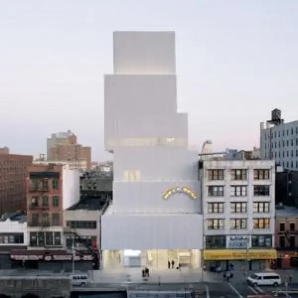
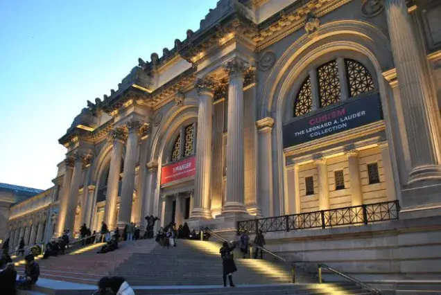

Vous avez toujours eu l’envie de vous rendre à New York ? Des centaines d’activités s’offrent à vous dans cette ville immense. Vous ne savez donc pas où donner de la tête tellement le choix est vaste. C’est pour cette raison que quatre lieux emblématiques de New York sont réunis ici. Des lieux intimement liés à l’art, d’une importance historique ou culturelle non négligeable. Des lieux au coeur de Manhattan que vous ne pouvez pas manq
Le New Museum
Le New Museum à été fondé en 1977 par Marcia Tucker à New York. C’est l’un des seuls musées au monde à présenter des oeuvres contemporaines d’ordre international. Les expositions durent quelques mois et se succèdent. De ce fait la collection est sans cesse inédite. Ce musée situé au 235 Browery Street à Manhattan possède une architecture atypique. Vous ne pouvez qu’être ébahi par ce bâtiment avec ses blocs qui semblent vaciller !
Voici quelques expositions qui y sont présentées
jusqu’en juin 2019 :
- Marianna Simnett : Blood In My Milk;
- Marguerite Humeau : Birth Canal;
- Dan Herschlein : The Architect;
Central Park
Connu dans le monde entier, Central Park est situé au plein coeur de Manhattan. C’est dans ce parc urbain que le livre Central Park (lien vers la page livre) de G. Musso débute. Sa superficie est de 3,4 km2, soit l’équivalent de 450 terrains de football ! Le parc offre des paysages somptueux avec une faune et une flore exceptionnelles. Une multitude d’activités se présentent à vous, que ce soit des concerts, la visite du zoo ou bien des moments de détente au bord d’un plan d’eau. Sa nature poétique nous subjugue au fil des saisons par sa vaste palette de couleurs. C’est donc un lieu à ne pas manquer !
Wall Street
Wall Street, rue emblématique de New York, est située dans le quartier de Manhattan. Étant le coeur économique de la ville, elle est fréquentée quotidiennement par de nombreux traders. C’est notamment le cas de Jordan Belfort dans Le Loup de Wall Street. Les colonnes du Federal Hall sont impressionnantes à voir. On peut également admirer le Taureau de Wall Street à quelques pas de la bourse Cette sculpture en bronze a été réalisée par Arturo Di Modica. L’oeuvre, symbolique, est l’une des plus photographiées de New York.
Le Metropolitan Museum of Art
Quelques mois plus tard, alors que Jordan et Naomi sont en vacances en Italie, tante Emma décède. Jordan doit alors récupérer les 20 millions de dollars en Suisse. Mais en direction de Monaco, son bateau est pris dans une tempête et fait naufrage. Cela l’empêche d’arriver à temps à la banque.
Deux ans plus tard, Jordan est arrêté par le FBI. Il risque 20 ans de prison pour fraude. Il peut cependant atténuer sa peine s’il dénonce ses collègues. Voulant choisir cette dernière option, il l’annonce à sa femme Naomi. Mais elle lui fait savoir qu’elle veut divorcer et avoir la garde des enfants. Jordan s’énerve et prend de la drogue alors qu’il avait arrêté depuis plusieurs années. Il tente également de partir avec sa fille après avoir frappé sa femme, en vain.
Une annonce bouleversante
Nous retournons quelques jours auparavant, à Paris. Alice se rend chez un spécialiste qui lui apprend qu’elle est atteinte d’une forme précoce d’Alzheimer. Seymour, au courant pour sa maladie, cherche à l’aider rapidement. Il la convainc de se faire soigner au Segabo Cottage Hospital, centre de recherche de pointe.

La chute de Stratton
Le Metropolitan Museum of Art, dit “Met” est situé à l’est de Central Park. Il est le plus grand musée des Etats-Unis, et le 3ème plus visité du monde. Le Met possède environ 2 millions d’oeuvres d’art provenant du monde entier. Parmi les 250 000 oeuvres exposées, on retrouve celles de grands peintres européens tel que Monet, Rembrandt ou Vermeer. On peut également admirer la plus ancienne construction de New York : le temple de Dendur. C’est une pièce historique et exceptionnelle qui a été offerte par le gouvernement égyptien.
p> Museum of Art.
Voici quelques collections éphémères qui y sont
exposées jusqu’en 2019 :
- Exposition DELACROIX
- Exposition Everything is connected, Art &
Conspiracy
- Exposition Art of Native America.
J'espère que ces articles vous ont appris quelque chose ou alors qu'ils vous donneront des idées pour vos futurs voyages ! Si vous avez des questions ou des commentaires à me transmettre je vous invite à remplir le formulaire de contact.